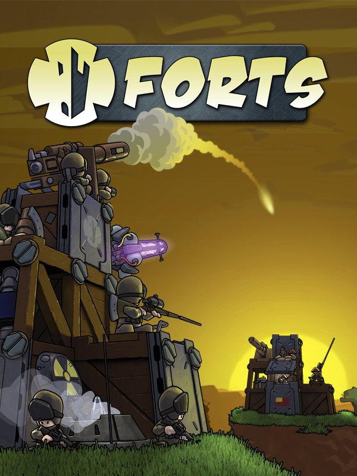

Forts
Forts
Details
|  | |
| Playtime | 7h 7m 0s |
| Last Activity | 05/08/2020 14:39:12 |
| Added | 05/08/2018 |
| Modified | Never |
| Completion Status | Played |
| Source | Steam |
| Platform | PC |
| Release Date | 19/04/2017 |
| Community Score | 87 |
| Critic Score | 74 |
| User Score | |
| Genre | Action Strategy |
| Developer | EarthWork Games |
| Publisher | EarthWork Games |
| Feature | Achievements Cloud saves Co-op Includes Level Editor LAN Co-Op LAN Pvp Leaderboards Multiplayer Online Co-Op Online Pvp Pvp Single Player Trading Cards Workshop |
| Links | PCGamingWiki Community Hub Discussions Guides Workshop Achievements Store Page News |
Description
Trading Cards Just Added!
To celebrate Forts' third birthday we have added twelve Steam Trading Cards. Added to this are five backgrounds, five emoticons as well as badges, which can all be earned and crafted through playing Forts.Active Development
Since launch, Forts has been heavily supported with:- Multiplayer Training - Missions specifically designed to get new players up to speed with online play.
- Frequent updates - Fixes, new features and rebalancing.
- Free DLC - Tons of Guns weapon pack, repair station, additional commander characters and more (see examples below).
- Modding - Workshop integration for the built-in map editor and player weapons, tech and campaigns. New features are added regularly.
- Ranked Multiplayer Leaderboards - 1v1 bi-monthly seasons with collectable medals.
- Seasonal Content - Halloween theme, Holidays theme, etc.
- Vibrant Community - Forts Discord with an active, helpful and informative membership, plus frequent tournaments.
_______________________________

Core Gameplay
Forts is a physics-based RTS where foes design and build custom bases, arm them to the teeth and blast their opponent's creations to rubble.Build an armoured fort in real-time and arm it to the teeth. Collect resources, develop your tech-tree, unlock advanced weapons to target your opponent's weak points, and feel the satisfaction as their fort comes crashing down.
Features
- Build forts of any size and shape, as you fight
- Up to 8 players in online multiplayer with co-op and team deathmatch
- Ranked multiplayer matchmaking and leaderboards
- 28 mission single-player campaign
- Challenging skirmish mode
- Unlockable tech-tree
- Various materials and hidden rooms
- 16 unique weapons
- 4 factions
- 12 commander characters with unique game-changing abilities
- Powerful replay system
- Built-in level editor
- Steam Workshop Support
- Designed from the ground up to support mods
Update highlights include...
New Multiplayer Training Missions!
To help skill up new players, we have added a new ‘Training’ tab to the multiplayer screen, under which are three missions to teach rookie commanders some of the techniques they will need to survive in online battles. Featuring an all new environment and SFX, these missions teach AA defense skills, rush building and structural durability. In addition to this, players can create their own training missions and upload them via the Steam Workshop._______________________________

Tons of Guns
This major free update adds two tech buildings which allow commanders access to six formidable new weapons. The Armoury unlocks Flak guns to clear the skies of enemy projectiles, and EMP rockets to power down enemy tech, both of which can be upgraded to the Shotgun and twin Rocket launcher, respectively. The classic Cannon is now found in the new Munitions Plant, where it is joined by it's little brother, the burst-firing 20mm Cannon. The Factory now produces two beam weapons, the classic Plasma Laser and the new Firebeam, great for penetrating fortifications to ignite them from within._______________________________

Repair Station
In an effort to reduce APM and to add another element of strategy, we have created the Repair Station. Available as a device built directly from the Reactor, the Repair Station repairs damage to surrounding building materials and devices as and when they are damaged in exchange for an ongoing resource cost. Multiple Repair Stations can be built at a time, but should be placed with care to maximise their coverage, while also ensuring they don’t put too much of a strain on your economy.Ranked Multiplayer
Players who opt to play ranked matches will have the result of their battles figure into their score, and their rank will be adjusted accordingly on the public Leaderboard. Seasons last for two months, with medals given out to the table toppers in the 1v1 arena._______________________________